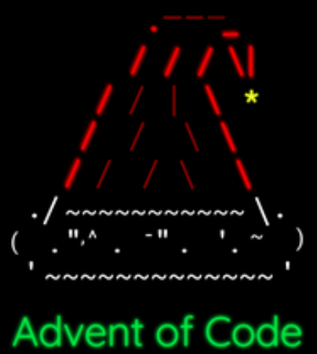
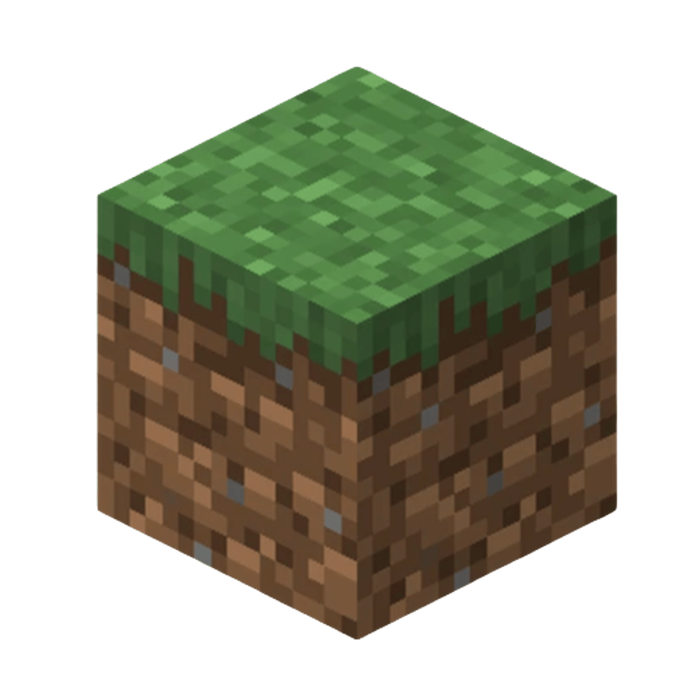

Introduction
Welcome! I am Jeroen Oerlemans and this is my programming portfolio. I am currently 25 years old computer scientist from The Netherlands. I graduated from Computer Science and am working on promoting to my masters while working in the field. I have worked with computers since the age of 13. The content on this page list some programming achievements, but there are some other skills worth listing here:
IT
I am currently working as IT-specialist and have about 3 years in the field. My job specializes in server management and windows remote help desk. At my current job we host several thousand customers who host their Windows environment on our hosted Windows servers. My day to day includes everything from PowerShell script automatisation and server deployment to keyboard and mouse issues, anything that clients call about or monitoring reports.
Minecraft
Computer Science started with Minecraft for me. Starting at 13 I set up servers as a side job. Starting as just running the servers at hosts or hosting them myself, mainly using already developed plugins. Later I transitioned to small bits of Java code, but mainly using programs like Skript to develop whatever I was missing. Eventually I transitioned to making the servers I was working for from scratch, developing the foundational plugins myself, a bit of that code can be found here.About
This portfolio contains some defining projects. Feel free to browse around the GitHub repositories listed here, watch the Demo's and read the reports. All of these projects are either solely made by me or I had a substantial contribution to the end-result.
My Projects
Dark Web Crawler
TOR Browser crawler designed for forums. Flags illegal content by fetching page data and bypassing bot detection.
Fluid Simulation
Physics based fluid simulation in C++. Using real-life fluid dynamics to simulate interactions with objects, heat and much more.
Stratego
A chess-like strategy game with the objective of capturing the opposing flag. A Java based computer graphics & AI engine project, both visualising the game and training an AI on next-move guessing.
Forma Domain Language
Forma is a Domain language to transform JSON-like Forma files to a plug-and-play webpage featuring an HTML, CSS and JavaScript file to comform to the input of the Forma file.

Advent of Code 2024 - Java
In the beginning of december, before the holidays, I had some time and joined this years Advent of Code.

Minecraft Plugins
Between the age of 13-17 I seriously got into programming and computers. I uploaded some of my very old experimenting projects.
Select a project above
Choose a project to see detailed information, images, and technologies used.